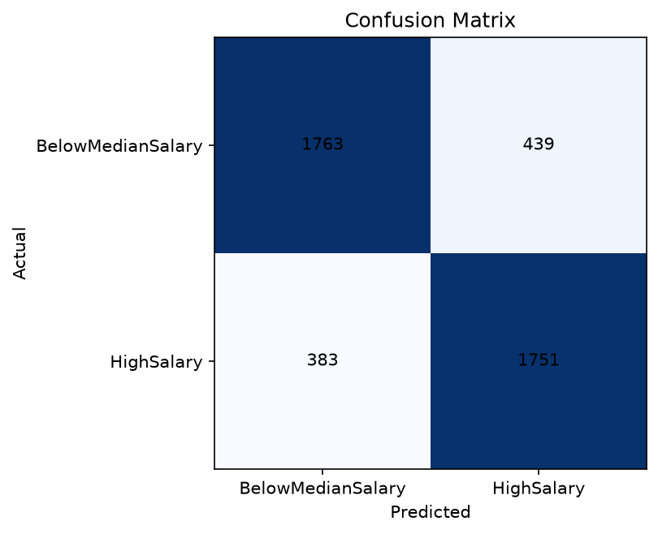

프로그래밍 언어 및 개발자 특성 기반
고연봉 예측 분석 보고서
Stack Overflow 개발자 설문 데이터를 이용해 연봉 중앙값 이상 여부를 분류하고, 사용언어별 연봉 통계·테스트 성능·예측 결과를 함께 분석한 상세 보고서입니다.
1. 핵심 요약
- 입력 파일:
/Users/yoonman/01_Project/skala_practice/08/08_04/종합실습/code/data/results.csv - 학습/테스트 표본: 17,342 / 4,336
- 고연봉 정의: ConvertedCompYearly가 학습 데이터 중앙값 이상
- 분석 기준 임계값: $76,340.50
- 분석 대상 언어: 15개 · 테스트 데이터에서 실제 사용자가 존재하는 언어: 14개
2. 분석 목적과 해석 범위
본 프로젝트의 예측 타깃은 실제 연봉 금액 자체가 아니라, 응답자의 연봉이 학습 데이터 중앙값 이상인지 여부입니다. 따라서 결과의 “예측 확률”은 특정 언어를 사용하면 연봉이 얼마가 된다는 의미가 아니라, 해당 응답자가 고연봉 그룹에 속할 확률을 뜻합니다.
언어별 통계는 관측된 연봉 분포를 보여주며, 언어별 평가는 최종 full_model을 각 언어 사용자의 테스트 하위집합에 적용한 결과입니다. 언어별 결과에는 국가·경력·직무·학력 차이가 섞여 있으므로 인과관계나 언어 자체의 순수한 효과로 해석해서는 안 됩니다.
3. 데이터와 타깃 정의
| 항목 | 내용 |
|---|---|
| 원본 데이터 | /Users/yoonman/01_Project/skala_practice/08/08_04/종합실습/code/data/results.csv |
| 전체 행 수 | 21,678 |
| 최종 유효 행 수 | 21,678 |
| 학습 / 테스트 분할 | 17,342 / 4,336 · random_state=42 |
| 학습 고연봉 비율 | 0.500 |
| 테스트 고연봉 비율 | 0.492 |
| 결측·비정상 제거 | 연봉 결측 0 · 연봉 0 이하 0 · 언어 결측 0 · 중복 0 |
4. 특성 설계와 전처리
수치형 특성
- YearsCodeProNumeric: 전문 개발 경력
- LanguageCount: 응답자가 선택한 전체 언어 수
범주형 특성
- RemoteWork
- DevType
- EdLevel
- Employment
- OrgSize
- Country
언어 사용 여부는 Python, R, Julia, Java, Kotlin, Scala, JavaScript, TypeScript, PHP, C, C++, Rust, C#, Go, Swift를 각각 0/1 특성으로 만들었습니다. Java와 JavaScript, C와 C++, C#는 세미콜론 단위로 분리하여 문자열 부분 일치 오류를 피했습니다. 연봉 원본과 ResponseId는 모델 입력에서 제외했습니다.
5. 모델 비교와 최종 성능
| 모델 | Accuracy | Balanced Accuracy | Precision | Recall | F1 | ROC-AUC | Average Precision |
|---|---|---|---|---|---|---|---|
| dummy | 0.508 | 0.500 | 0.000 | 0.000 | 0.000 | 0.500 | 0.492 |
| language_only | 0.563 | 0.564 | 0.550 | 0.624 | 0.584 | 0.595 | 0.566 |
| profile_only | 0.804 | 0.804 | 0.796 | 0.808 | 0.802 | 0.885 | 0.874 |
| full_model | 0.810 | 0.811 | 0.800 | 0.821 | 0.810 | 0.890 | 0.878 |
평가 해석 클래스 불균형이 있으므로 Accuracy 하나만 보지 않고 Balanced Accuracy, F1, ROC-AUC, Average Precision을 함께 사용했습니다. 최종 모델은 고연봉 클래스에 대해 Recall 0.821, Precision 0.800을 기록했습니다.
6. 혼동행렬과 예측 오류

| 실제/예측 | Below Median | High Salary |
|---|---|---|
| Actual_0 | 1763 | 439 |
| Actual_1 | 383 | 1751 |
- 실제 고연봉을 고연봉으로 맞힌 수: 1,751건
- 실제 고연봉을 놓친 수: 383건
- 고연봉으로 예측했으나 실제로는 아닌 수: 439건
- 실제 저연봉을 저연봉으로 맞힌 수: 1,763건
- 고연봉 Recall이 높지만, Precision은 약 0.800이므로 예측 고연봉 판정의 약 0.200는 오탐입니다.
7. 주요 예측 특성
아래 계수는 Logistic Regression의 고연봉 분류 방향을 나타냅니다. 연봉 증가액이나 인과효과가 아니며, 범주형 변수는 기준 범주와 비교한 상대적 계수입니다.
| 특성 | 계수 | 방향 |
|---|---|---|
| cat__Country_Switzerland | 4.152 | positive |
| cat__Country_United States of America | 3.415 | positive |
| cat__Country_Denmark | 2.967 | positive |
| cat__Country_Israel | 2.435 | positive |
| cat__Country_Norway | 2.337 | positive |
| cat__Country_Australia | 2.156 | positive |
| cat__Country_Ireland | 2.154 | positive |
| cat__Employment_Retired | -2.041 | negative |
| cat__DevType_Academic researcher | -1.947 | negative |
| cat__Country_Hong Kong (S.A.R.) | 1.857 | positive |
| cat__DevType_Student | -1.832 | negative |
| cat__Country_Singapore | 1.815 | positive |
| cat__Country_Luxembourg | 1.799 | positive |
| cat__Country_Nigeria | -1.756 | negative |
| cat__Country_United Kingdom of Great Britain and Northern Ireland | 1.692 | positive |
| cat__Country_Cyprus | 1.661 | positive |
| cat__Country_Germany | 1.635 | positive |
| cat__Country_Canada | 1.625 | positive |
| cat__DevType_Engineering manager | 1.574 | positive |
| cat__Country_Iceland | 1.564 | positive |
8. 언어별 연봉 통계
전체 유효 데이터에서 계산한 관측 통계입니다. 고연봉 비율은 학습 데이터에서 계산된 임계값 $76,340.50 이상인 비율입니다.
9. 언어별 테스트 평가
| 언어 | 테스트 수 | 실제 고연봉자 수 | 예측 고연봉자 수 | 실제 고연봉 비율 | 예측 고연봉 비율 | Accuracy | F1 | ROC-AUC |
|---|---|---|---|---|---|---|---|---|
| JavaScript | 2918 | 1408 | 1466 | 0.483 | 0.502 | 0.825 | 0.823 | 0.897 |
| Python | 2523 | 1273 | 1309 | 0.505 | 0.519 | 0.815 | 0.820 | 0.896 |
| TypeScript | 1976 | 1011 | 1054 | 0.512 | 0.533 | 0.818 | 0.826 | 0.893 |
| Java | 1268 | 585 | 603 | 0.461 | 0.476 | 0.823 | 0.811 | 0.904 |
| C# | 1244 | 595 | 612 | 0.478 | 0.492 | 0.824 | 0.819 | 0.902 |
| C++ | 891 | 407 | 419 | 0.457 | 0.470 | 0.809 | 0.794 | 0.883 |
| C | 797 | 361 | 368 | 0.453 | 0.462 | 0.816 | 0.798 | 0.888 |
| PHP | 796 | 303 | 295 | 0.381 | 0.371 | 0.809 | 0.746 | 0.882 |
| Go | 752 | 435 | 446 | 0.578 | 0.593 | 0.826 | 0.851 | 0.887 |
| Rust | 625 | 331 | 367 | 0.530 | 0.587 | 0.779 | 0.802 | 0.863 |
| Kotlin | 464 | 233 | 249 | 0.502 | 0.537 | 0.819 | 0.826 | 0.893 |
| Swift | 239 | 150 | 156 | 0.628 | 0.653 | 0.816 | 0.856 | 0.865 |
| R | 197 | 98 | 96 | 0.497 | 0.487 | 0.838 | 0.835 | 0.914 |
| Scala | 104 | 62 | 65 | 0.596 | 0.625 | 0.760 | 0.803 | 0.854 |
| Julia | 0 | 0 | 0 | — | — | — | — | — |
언어별 고연봉자 수는 테스트 하위집합에서 실제 타깃 1의 개수와 모델 예측 1의 개수를 각각 표시합니다. 언어별 ROC-AUC는 해당 언어 사용자의 테스트 하위집합에서 모델의 순위화 성능을 뜻합니다. 표본 수가 작은 언어의 지표는 불안정할 수 있고, 사용자가 없는 언어는 평가 지표를 계산할 수 없습니다.
10. 언어별 예측 요약
아래 표는 각 언어 사용자의 테스트 데이터에서 실제 고연봉자 수, 모델의 예측 고연봉자 수와 비율, 평균 예측 확률, 분류 성능을 요약한 것입니다. 상세 응답자 단위 결과는 language_predictions.csv에서 확인할 수 있습니다.
| 언어 | 테스트 수 | 실제 고연봉자 수 | 예측 고연봉자 수 | 실제 고연봉 비율 | 예측 고연봉 비율 | 평균 예측 확률 | Accuracy | F1 |
|---|---|---|---|---|---|---|---|---|
| JavaScript | 2918 | 1408 | 1466 | 0.483 | 0.502 | 0.496 | 0.825 | 0.823 |
| Python | 2523 | 1273 | 1309 | 0.505 | 0.519 | 0.506 | 0.815 | 0.820 |
| TypeScript | 1976 | 1011 | 1054 | 0.512 | 0.533 | 0.523 | 0.818 | 0.826 |
| Java | 1268 | 585 | 603 | 0.461 | 0.476 | 0.480 | 0.823 | 0.811 |
| C# | 1244 | 595 | 612 | 0.478 | 0.492 | 0.487 | 0.824 | 0.819 |
| C++ | 891 | 407 | 419 | 0.457 | 0.470 | 0.466 | 0.809 | 0.794 |
| C | 797 | 361 | 368 | 0.453 | 0.462 | 0.462 | 0.816 | 0.798 |
| PHP | 796 | 303 | 295 | 0.381 | 0.371 | 0.386 | 0.809 | 0.746 |
| Go | 752 | 435 | 446 | 0.578 | 0.593 | 0.573 | 0.826 | 0.851 |
| Rust | 625 | 331 | 367 | 0.530 | 0.587 | 0.558 | 0.779 | 0.802 |
| Kotlin | 464 | 233 | 249 | 0.502 | 0.537 | 0.524 | 0.819 | 0.826 |
| Swift | 239 | 150 | 156 | 0.628 | 0.653 | 0.625 | 0.816 | 0.856 |
| R | 197 | 98 | 96 | 0.497 | 0.487 | 0.494 | 0.838 | 0.835 |
| Scala | 104 | 62 | 65 | 0.596 | 0.625 | 0.599 | 0.760 | 0.803 |
| Julia | 0 | 0 | 0 | — | — | — | — | — |
11. 언어 계수 분석
언어 계수는 다른 언어·국가·직무·경력 특성을 함께 넣은 full_model에서의 조건부 연관 방향입니다. 여러 언어를 동시에 사용하는 응답자가 많기 때문에 단일 언어의 독립적인 연봉 효과로 해석할 수 없습니다.
| 언어 | 계수 | 방향 |
|---|---|---|
| Scala | 0.556 | positive |
| PHP | -0.543 | negative |
| TypeScript | 0.399 | positive |
| Go | 0.373 | positive |
| Swift | 0.291 | positive |
| C# | -0.276 | negative |
| Rust | 0.269 | positive |
| Kotlin | 0.186 | positive |
| R | -0.173 | negative |
| JavaScript | -0.085 | negative |
| Java | -0.082 | negative |
| C | -0.037 | negative |
| Python | -0.005 | negative |
| C++ | 0.004 | positive |
| Julia | 0.000 | neutral |
12. 생성된 산출물
- model_comparison.csv
- classification_report.csv
- confusion_matrix.csv
- confusion_matrix.png
- feature_coefficients.csv
- language_coefficients.csv
- language_statistics.csv
- language_evaluation.csv
- language_predictions.csv
- language_prediction_summary.csv
- prediction_samples.csv
- high_salary_model.joblib
- model_metrics.json
- model_metadata.json
- result.md
- result.html
{kind=link}
HTML 보고서 외에도 CSV는 재분석용 원자료, JSON은 구조화된 메타데이터와 결과 요약, JOBLIB 파일은 재사용 가능한 학습 Pipeline입니다.
13. 결론과 한계
- 현재 모델은 전체 개발자의 연봉 중앙값 이상 여부를 분류하는 성능을 평가했습니다.
- 언어별 통계를 통해 Go, Swift, Scala 등에서 상대적으로 높은 고연봉 비율이 관측되었지만, 이는 국가·직무·경력과 결합된 결과입니다.
- 언어만 사용한 모델보다 프로필-only 모델이 훨씬 강하므로, 사용언어 단독으로 고연봉을 설명하기는 어렵습니다.
- 평가는 단일 랜덤 분할 기준이므로 교차검증·연도별 검증·외부 데이터 검증이 추가로 필요합니다.
- Stack Overflow 설문은 무작위 모집단 조사가 아니며, 본 결과를 채용·연봉 책정·인사 의사결정에 사용해서는 안 됩니다.